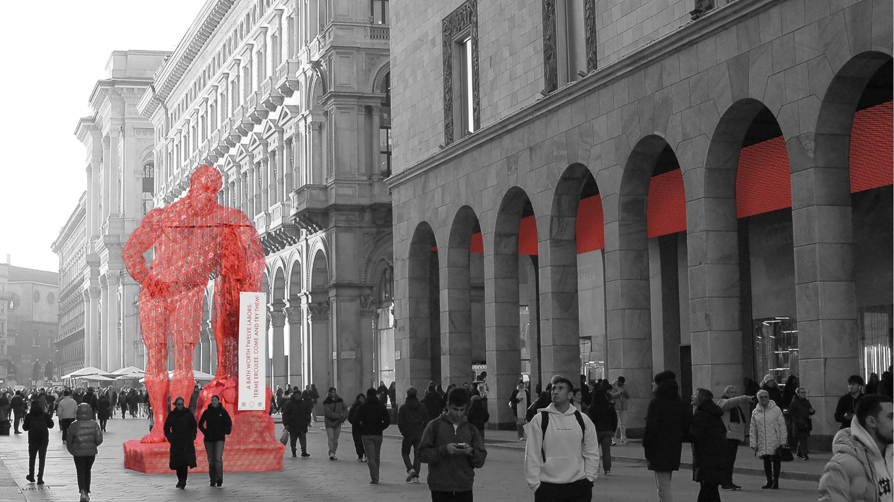
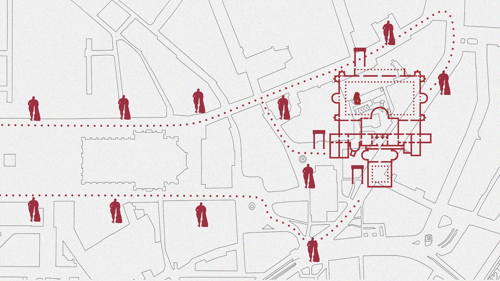
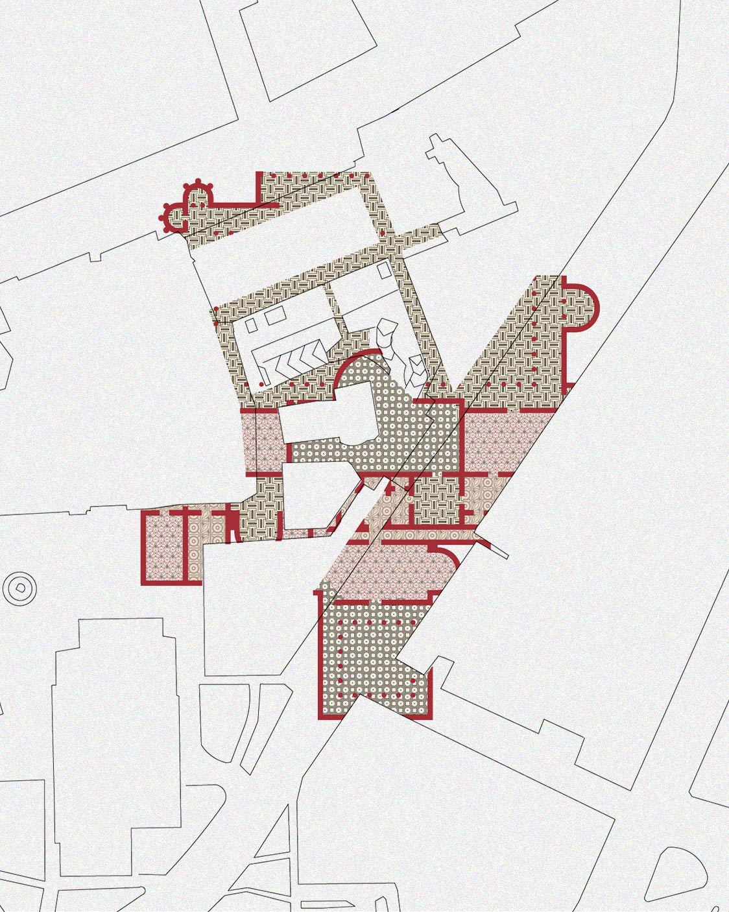
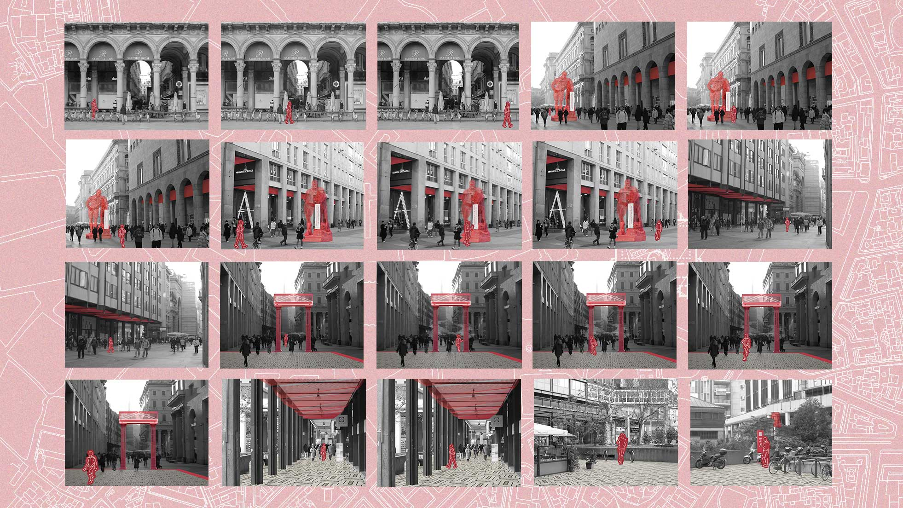
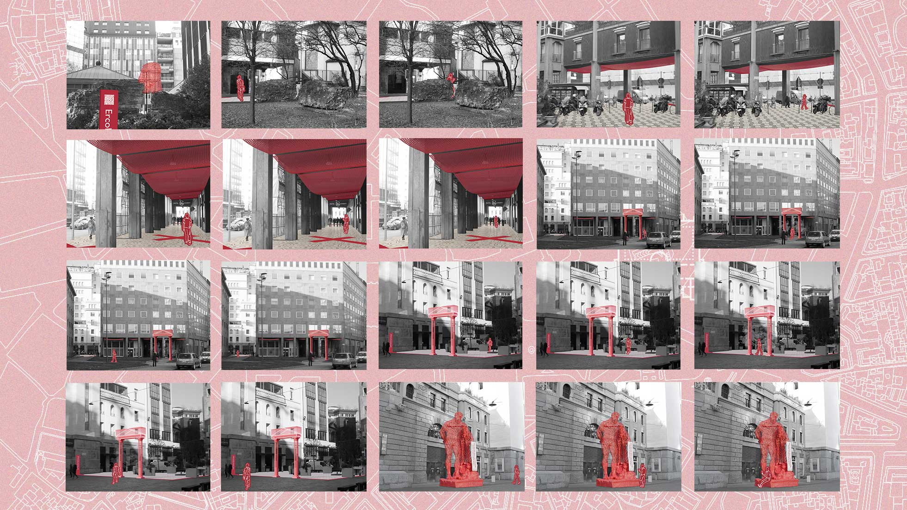
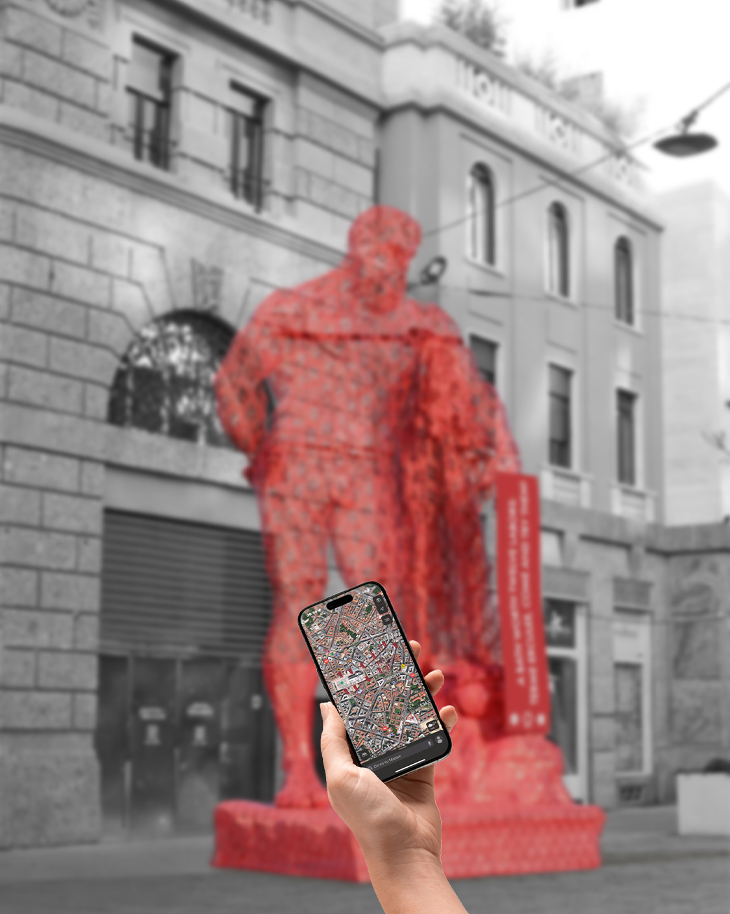
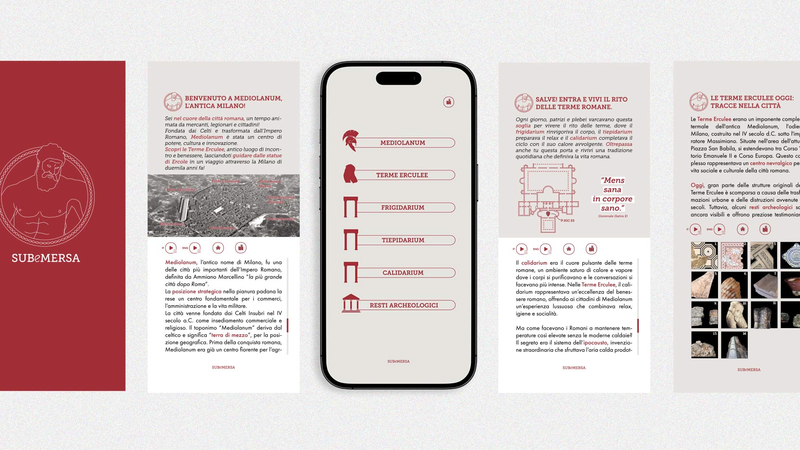

AS I RESURFACE, I DIVE BACK IN AGAIN.
[PROJECT INFO]
Subemersa is a project that brings to light the Terme Erculee, the largest thermal complex in ancient Mediolanum. The name, from submergo and emergo, reflects the intention to let Milan’s hidden history resurface through an immersive urban experience.
The project unfolds across three concentric levels: a diffuse layer with Hercules statues and suspended installations along the city arcades; a threshold area marked by symbolic gates evoking the calidarium, tepidarium, and frigidarium through modular mesh structures and mist; and a central core where reconstructed mosaics and a suspended Hercules sculpture define the narrative focus.
Interactive signage and a digital map connect visitors to the archaeological site, revealing the original layout of the baths and their rediscovered fragments within contemporary Milan.






